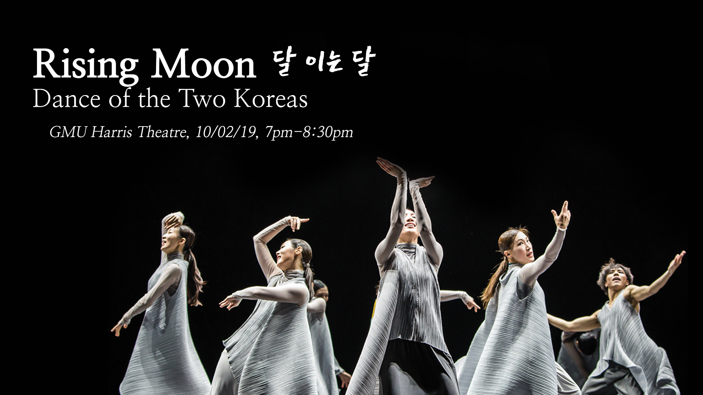

Rising Moon, Dance Performance
We are proud to host the Nanuri Dance Company's performance of "Rising Moon" (달 이는 달), a Korean contemporary dance! The performance will be a celebration of the arts from both South and North Korea as the dancers will be shadowed by imagery from the Joseon Dynasty (1392~1910) through to the Korean War (1950) and into the present. We hope we can encourage you to wish for world peace through this performance.
Nanuri Dance Company (NCD) was established in 2005 under the motto "Communicate and Share Together." They are a professional dance company that performs a diverse repertoire of traditional and modern Korean dance with a unique focus on collaborations with actors and educators. NDC aspires to produce and present sustainable and social dances that will reach the hearts of everyone in the community.
CAFE will be paying for the performer's traveling fees and housing, and we need your help! Please help donate to provide them a comfortable journey as they are doing this for free on behalf of a good cause!